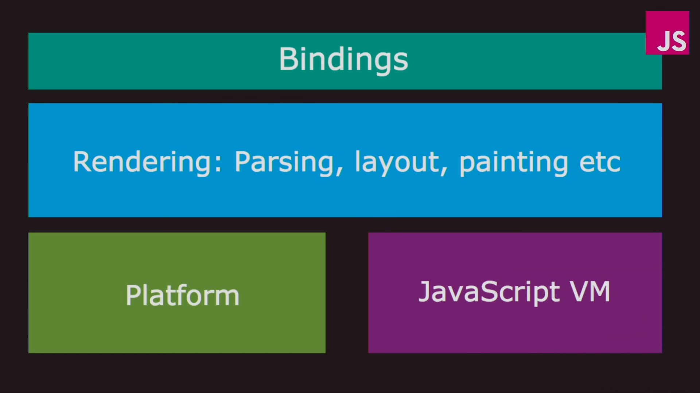

Browser Component

component ของ browser แล้วโดยหลักๆแล้วจะประกอบด้วย 4 component ได้แก่ Bindings, Rendering(Parsing, Layout, painting, etc.), Plateform และ Javascript Virtual Machine สำหรับบทความนี้จะเน้นในส่วนของ Rendering ซึ่งเป็นส่วนที่ทำหน้าที่ในการจัดรูปแบบหน้าเว็บ วาดลงบนจอภาพ จนได้ผลลัพธ์สุดท้ายออกมาเป็นหน้าเว็บ